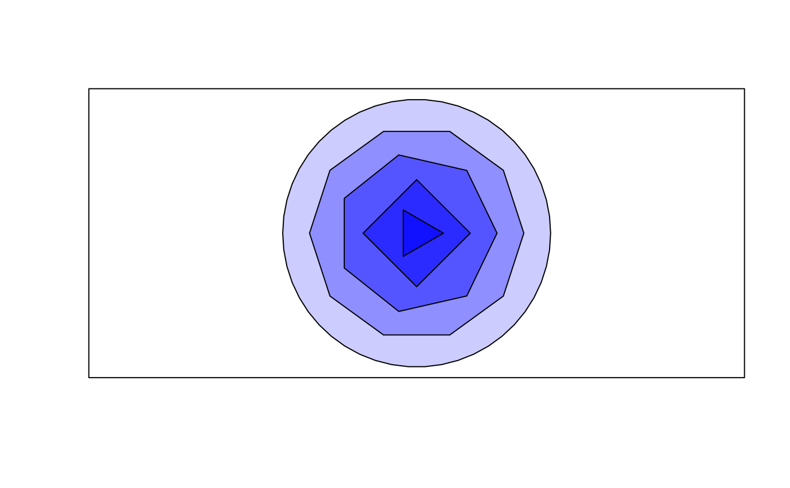
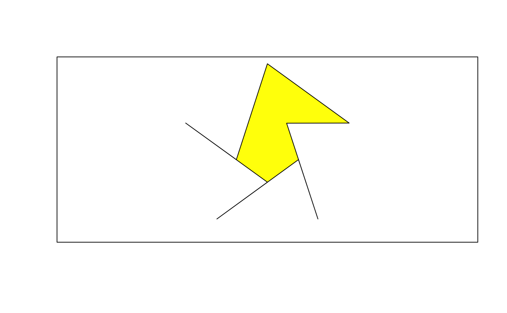
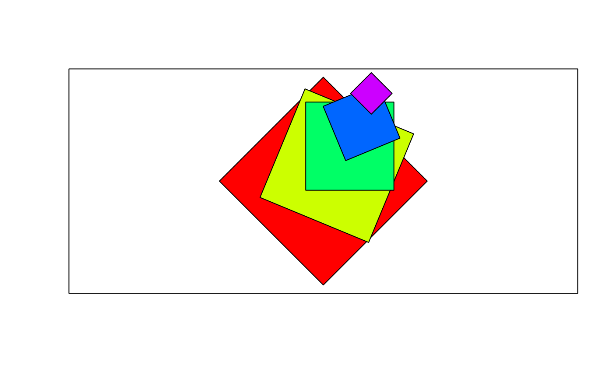
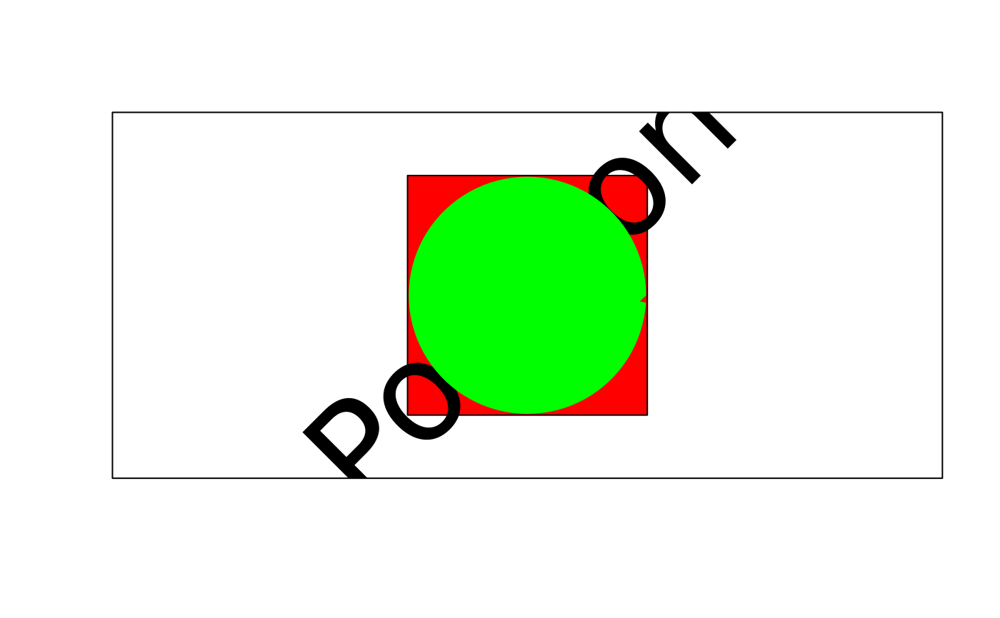
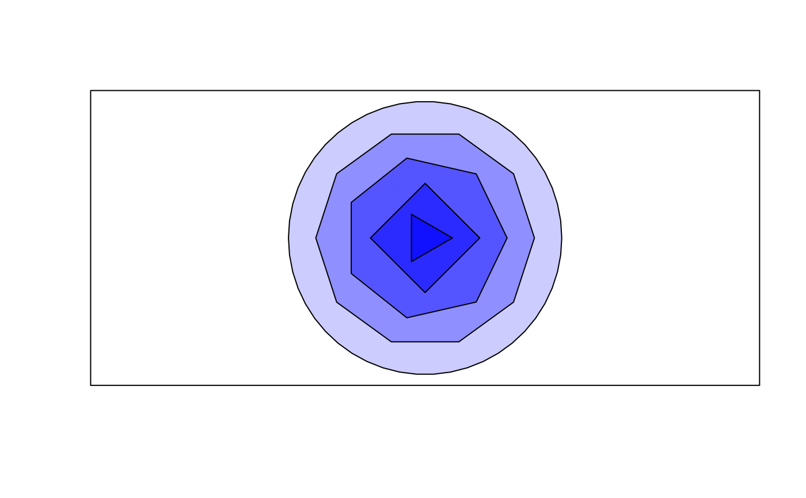
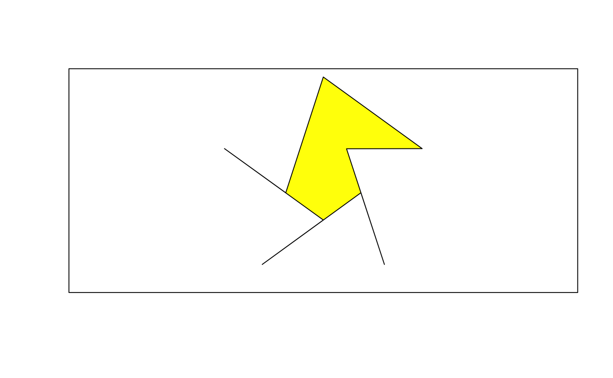
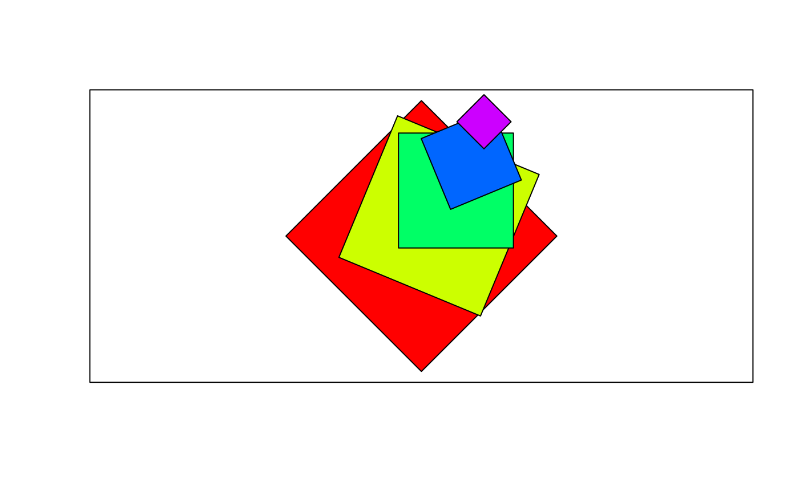
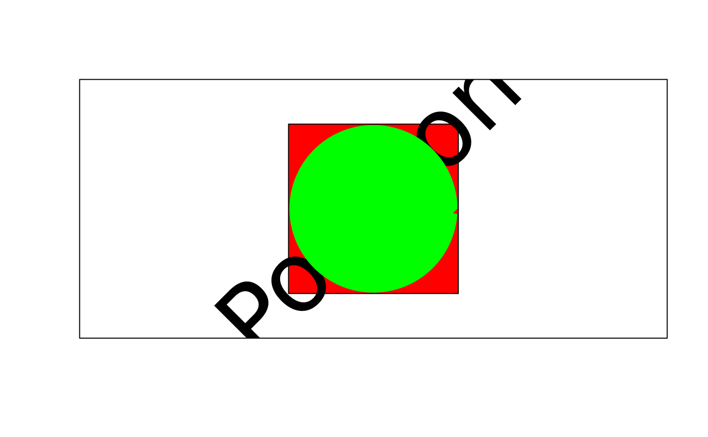

Draw Regular Polygon(s)
DrawRegPolygon.RdDraw a regular polygon with n corners. This is the workhorse function for drawing regular polygons. Drawing a circle can be done by setting the vertices to a value of say 100.
Arguments
- x, y
a vector (or scalar) of xy-coordinates of the center(s) of the regular polygon(s).
- radius.x
a scalar or a vector giving the semi-major axis of the ellipse for the polygon(s).
- radius.y
a scalar or a vector giving the semi-minor axis of the ellipse for the polygon(s). Default is radius.x which will result in a polygon with radius.x.
- rot
angle of rotation in radians.
- nv
number of vertices to draw the polygon(s).
- border
color for borders. The default is
par("fg"). Useborder = NAto omit borders.- col
color(s) to fill or shade the shape with. The default
NA(or alsoNULL) means do not fill (say draw transparent).- lty
line type for borders and shading; defaults to
"solid".- lwd
line width for borders and shading.
- plot
logical. If
TRUEthe structure will be plotted. IfFALSEonly the points are calculated and returned. Use this if you want to combine several geometric structures to a polygon.
Details
All geometric arguments will be recycled.
Value
The function invisibly returns a list of the calculated coordinates for all shapes.
See also
Examples
# Draw 4 triangles (nv = 3) with different rotation angles
plot(c(0,1),c(0,1), asp=1, type="n", xaxt="n", yaxt="n", xlab="", ylab="")
DrawRegPolygon(x = 0.5, y = 0.5, rot = (1:4)*pi/6, radius.x = 0.5, nv = 3,
col = SetAlpha("yellow",0.5))
 # Draw several polygons
plot(c(0,1),c(0,1), asp=1, type="n", xaxt="n", yaxt="n", xlab="", ylab="")
DrawRegPolygon(x = 0.5, y = 0.5, radius.x=seq(50, 5, -10) * 1 /100,
rot=0, nv = c(50, 10, 7, 4, 3), col=SetAlpha("blue",seq(0.2,0.7,0.1)))

# Combine several polygons by sorting the coordinates
# Calculate the xy-points for two concentric pentagons
d.pts <- do.call("rbind", lapply(DrawRegPolygon(radius.x=c(1,0.38), nv=5,
rot=c(pi/2, pi/2+pi/5), plot=FALSE ), data.frame))
# prepare plot
plot(c(-1,1),c(-1,1), asp=1, type="n", xaxt="n", yaxt="n", xlab="", ylab="")
# .. and draw the polygon with reordered points
polygon( d.pts[order(rep(1:6, times=2), rep(1:2, each=6)), c("x","y")], col="yellow")

# Move the center
plot(c(0,1),c(0,1), asp=1, type="n", xaxt="n", yaxt="n", xlab="", ylab="")
theta <- seq(0, pi/6, length.out=5)
xy <- PolToCart( exp(theta) /2, theta)
DrawRegPolygon(x=xy$x, y=xy$y + 0.5, radius.x=seq(0.5, 0.1, -0.1),
nv=4, rot=seq(0, pi/2, length.out=5), col=rainbow(5) )

# Plot a polygon with a "hole"
plot(c(-1,1),c(-1,1), asp=1, type="n", xaxt="n", yaxt="n", xlab="", ylab="")
DrawRegPolygon(nv = 4, rot=pi/4, col="red" )
text(x=0,y=0, "Polygon", cex=6, srt=45)
# Calculate circle and hexagon, but do not plot
pts <- DrawRegPolygon(radius.x=c(0.7, 0.5), nv = c(100, 6), plot=FALSE )
# combine the 2 shapes and plot the new structure
polygon(x = unlist(lapply(pts, "[", "x")),
y=unlist(lapply(pts, "[", "y")), col="green", border=FALSE)

# Draw several polygons
plot(c(0,1),c(0,1), asp=1, type="n", xaxt="n", yaxt="n", xlab="", ylab="")
DrawRegPolygon(x = 0.5, y = 0.5, radius.x=seq(50, 5, -10) * 1 /100,
rot=0, nv = c(50, 10, 7, 4, 3), col=SetAlpha("blue",seq(0.2,0.7,0.1)))

# Combine several polygons by sorting the coordinates
# Calculate the xy-points for two concentric pentagons
d.pts <- do.call("rbind", lapply(DrawRegPolygon(radius.x=c(1,0.38), nv=5,
rot=c(pi/2, pi/2+pi/5), plot=FALSE ), data.frame))
# prepare plot
plot(c(-1,1),c(-1,1), asp=1, type="n", xaxt="n", yaxt="n", xlab="", ylab="")
# .. and draw the polygon with reordered points
polygon( d.pts[order(rep(1:6, times=2), rep(1:2, each=6)), c("x","y")], col="yellow")

# Move the center
plot(c(0,1),c(0,1), asp=1, type="n", xaxt="n", yaxt="n", xlab="", ylab="")
theta <- seq(0, pi/6, length.out=5)
xy <- PolToCart( exp(theta) /2, theta)
DrawRegPolygon(x=xy$x, y=xy$y + 0.5, radius.x=seq(0.5, 0.1, -0.1),
nv=4, rot=seq(0, pi/2, length.out=5), col=rainbow(5) )

# Plot a polygon with a "hole"
plot(c(-1,1),c(-1,1), asp=1, type="n", xaxt="n", yaxt="n", xlab="", ylab="")
DrawRegPolygon(nv = 4, rot=pi/4, col="red" )
text(x=0,y=0, "Polygon", cex=6, srt=45)
# Calculate circle and hexagon, but do not plot
pts <- DrawRegPolygon(radius.x=c(0.7, 0.5), nv = c(100, 6), plot=FALSE )
# combine the 2 shapes and plot the new structure
polygon(x = unlist(lapply(pts, "[", "x")),
y=unlist(lapply(pts, "[", "y")), col="green", border=FALSE)
